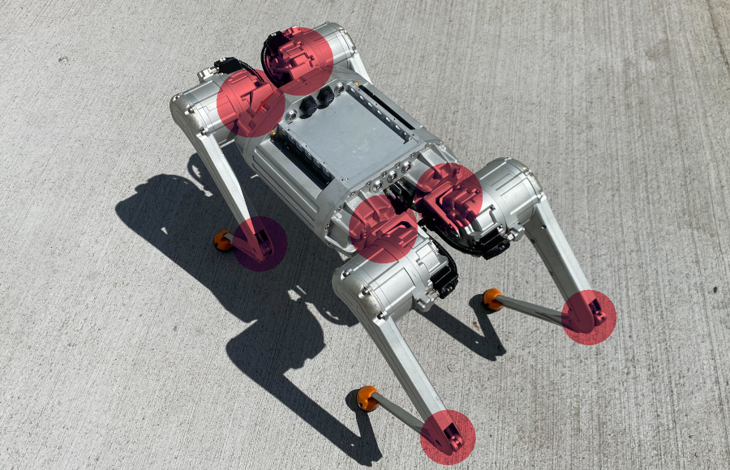

Safety#
This section contains the main safety instructions for Honey Badger 5.0 operation, handling, and maintenance.
Read this page before powering on or operating the robot.
Note
The Honey Badger 5.0 is a powerful mobile robot equipped with electric actuators, batteries, sensors,
and onboard computers. Incorrect operation may result in injury, damage to the robot or damage to the
surrounding environment.
General safety rules#
Operate the robot only after reading this manual.
Keep hands, tools, loose clothing, and cables away from the robot legs.
Do not touch the legs or joints while the robot is powered on or enabled.
Always keep distance of at least 1 m between the operating robot and people, animals, stairs, fragile objects, or moving objects.
Do not leave the robot operating unattended; an operator should always be within line of sight of the operating robot.
Do not exceed the specified payload, speed, or operating limits.
Stop the robot immediately if unexpected behavior occurs.
Operator responsibilities#
The operator is responsible for safe preparation, supervision, and shutdown of the robot.
Before operation, the operator must:
inspect the robot for visible damage,
check that the battery is properly installed,
ensure that the operating area is clear,
confirm that all required software and communication systems are working,
make sure that all nearby people are aware that the robot may move.
During operation, the operator must:
supervise the robot at all times,
maintain a safe distance from the robot,
be ready to activate the emergency stop,
monitor the robot state and battery level,
stop operation if the robot behaves unexpectedly.
Operating environment#
Operate the robot only in environments suitable for its current configuration and software version.
Do not operate the robot:
on unstable, slippery, or wet surfaces,
near stairs, ledges, holes, or drop-offs,
in public areas without proper supervision and safety measures,
near moving vehicles or machinery,
in rain, snow, or standing water unless the robot is explicitly configured for such conditions,
in explosive or flammable environments,
outside the specified temperature and humidity limits.
Mechanical hazards#
The robot legs contain powerful moving joints. The legs may move suddenly during startup, calibration, recovery, or operation.
Warning
Keep hands, fingers, tools, and loose objects away from the legs and joints whenever the robot is powered on.
Do not:
place hands between leg segments,
lift or carry the robot by its legs,
stand close to the robot during startup or recovery,
attempt to stop leg motion by hand,
perform mechanical adjustments while the robot is enabled.
Below is an image highlighting mechanical pinch points - avoid touching the robot near these at all times.

Electrical and battery safety#
Warning
Honey Badger uses high capacity Lithium based battery pack. If operated incorrectly or outside guidelines specified in this manual, the battery can be a fire hazard.
The robot’s battery is a specialized piece of equipment, unsuitable for use outside of the Honey Badger system. To avoid damage and hazardous conditions:
use only approved batteries and chargers,
do not use damaged, swollen, leaking, or overheated batteries,
do not short-circuit battery terminals,
do not connect or disconnect the battery if the robot is wet or water is present nearby,
do not connect or disconnect the battery with wet hands,
do not charge the battery unattended,
do not operate the robot with damaged power cables or connectors,
disconnect power before maintenance, unless the procedure explicitly requires power,
after disconnecting the battery, secure the battery connector with the dedicated plug.
Safe handling and lifting#
The robot is heavy and may be difficult to handle by one person.
Power off the robot before lifting or transporting it.
Disable the actuators before handling the robot.
Carry the robot only by the main body or designated carrying points.
Do not lift the robot by the legs, sensors, connectors, cables, or payload.
Use two people or lifting equipment if required by the robot weight.
Remove the battery before transport if required by the transport procedure.
Warning
Lifting the robot when Standing or Walking (using any gait) can result in unexpected and rapid legs movements. Never lift the robot while in Active balance mode!